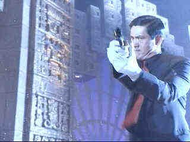

Replacement Killers,The/C-,A
Columbia/199788m/ANA,WS2.35,PS1.33
Chow Yun-Fat fan will be delighted. Chow Yun-Fat fans will be mortified. It's great to have this Hong Kong superstar making his Hollywood debut, but the vehicle has four flat tires and deflates the great strengths of this action star, leaving him a bumpy road to charm new audiences.
 |
Chow Yun-Fat brings his guns to Hollywood.©Columbia |
Chow is a hitman indebted to a mob boss and forced to carry
out his assassination instructions. When a cop is his next target, Chow lines him up in
his sights only to lose his nerve at the last moment watching the man interact with his
family. So, the makers of The Replacement Killers are trying to mine Chow's image
as a killer with a heart, but this is as far as it goes since the only character
revelations. Chow himself is up to all the action sequences, rolling between flying
bullets, but even his screen personality can't plug the gaping hole where the script
should have been. Mira Sorvino is along for the ride as an tall, good looking, artful
forger, who can also handle any old weapon at will. She throws some pretty good kicks too.
Anthony Fuqua debuts here as a director and tries to make
something of nothing with more cuts than he knows what to do with. The rapid-fire style
that matches the bullets is slick but banal. It's style for styles sake.
The Replacement Killers looks and sounds great. It's a
finely detailed explosive DVD. Dark scenes expose detail perfectly. Blacks are deep, blood
is even deeper. There's no blooming of explosions whatsoever and the bass impact matches
the visual power. At least both Chow and Sorvino look as good as they can on this
DVD.